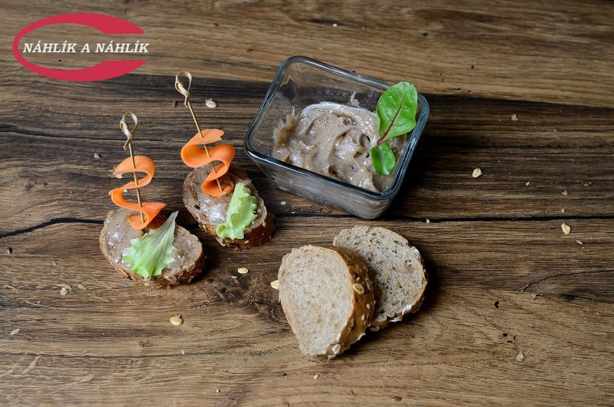

Guláše podľa @nahlikanahlik — Normy Jedál
Pozitivní ohlas z Vaší strany je pro nás ta nejlepší motivace a odměna za odvedenou práci. Děkujeme!
#jidlo #food #polevky #pastiky #hotovky #masovespeciality #nahlikanahlik #gulase #tradice #chut
"Vážení,
včera jsme obdrželi naši první objednávku z Vaší firmy. Ihned jsme několik výrobků ochutnali. V y n i k a j í cí !!!! I vyřízení objednávky na jedničku! Děkujeme moc (zároveň jsem objednala další) a doufám, že i nadále udržíte vysokou úroveň, abychom se mohli stát Vašimi pravidelnými zákazníky.
Děkujeme moc a držte se."
Také děkujeme a přejeme Vám všem krásný večer.
Objednávejte zde 👉 www.nahlikovi.cz